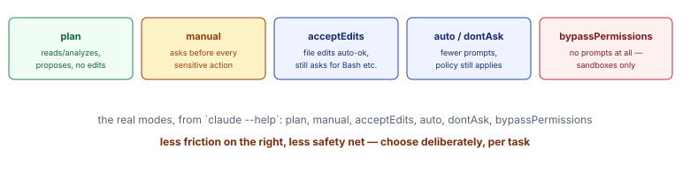

Concept
Settings scope, same layering idea as Topic 01. ~/.claude/settings.json is user-scoped (applies everywhere). A project's .claude/settings.json is meant to be shared/committed; .claude/settings.local.json is your personal, gitignored overrides for that same project — you've had one of these in this very repo all week.
- The six real permission modes (from
claude --help's--permission-modeflag):plan(read/analyze/propose, no edits),manual(asks before every sensitive action),acceptEdits(file edits auto-approved, other tools still ask),autoanddontAsk(fewer prompts, policy still applies), andbypassPermissions(no prompts at all — sandboxes with no internet access only). - This is the exact mechanism behind Week 2's
allow/ask/denyrules. A permission mode is the default posture;allow/ask/denyrules in settings refine it per tool. claude doctorand--safe-modeexist for exactly this layering's failure mode. When settings from multiple scopes combine unexpectedly,--safe-modedisables all customizations (CLAUDE.md, skills, hooks, MCP, commands, agents) so you can tell whether a problem is your config or something else.

Hands-on
1Look at your own settings, at both scopes
VM · terminal
cat ~/.claude/settings.json 2>&1 || echo "none yet"
cat .claude/settings.local.json 2>&1 || echo "none yet"If either is missing, that's fine — they're both opt-in and get created the first time something needs them.
2Try
Claude Code chat panel
plan mode for realSwitch to plan mode (check /help or your model/mode picker for the current shortcut) and ask it to make a small, real edit:
Prompt
Add a one-line comment to the top of CLAUDE.md noting today's date.
Checkpoint
In
plan mode it should propose the change and explain it, but not actually write the file. Switch back to your normal mode and re-run the same prompt — now it should actually edit.
3Run
claude doctorclaude doctorRead what it checks. This is your first stop any time a hook, MCP server, or custom command you configure later in this track doesn't behave as expected.